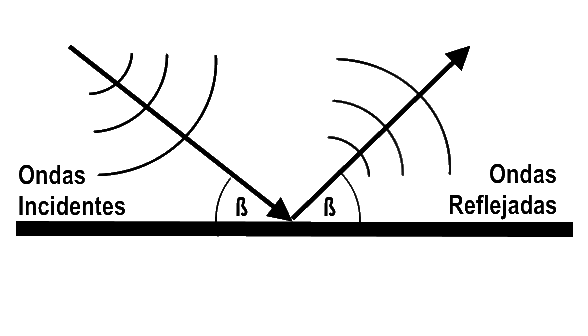
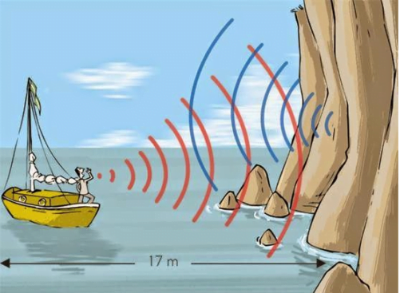
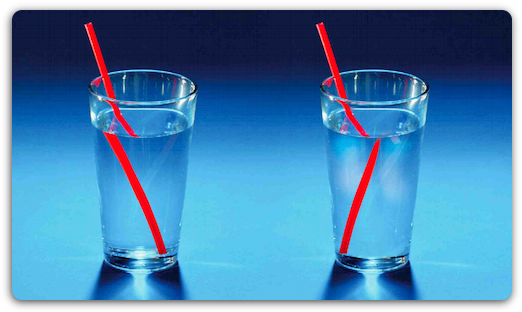
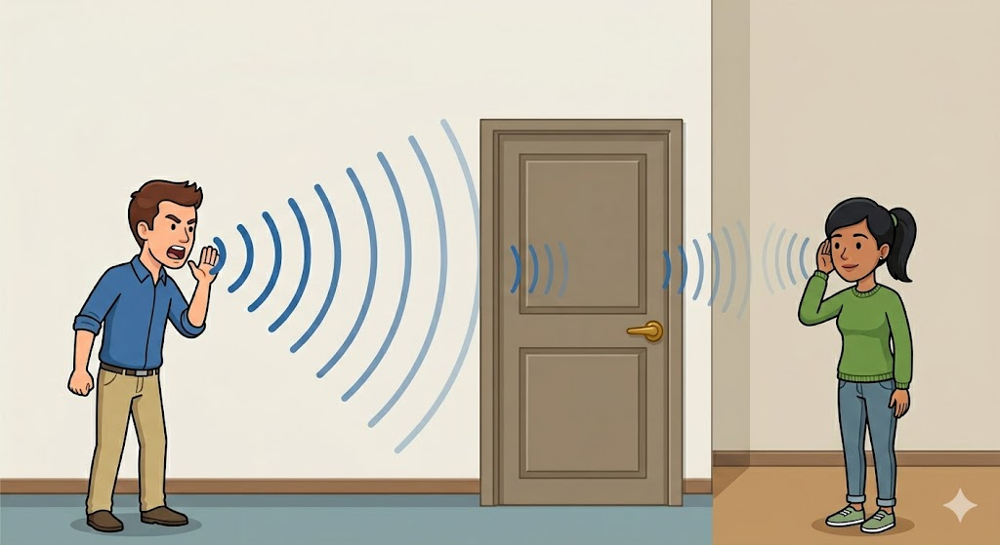
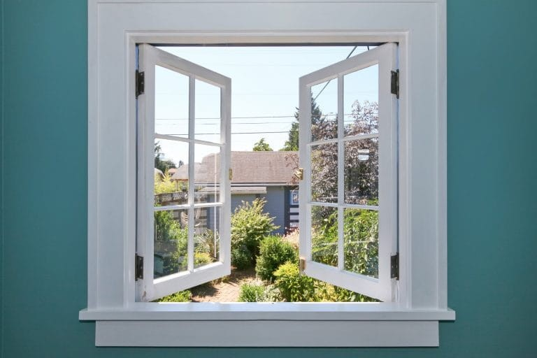
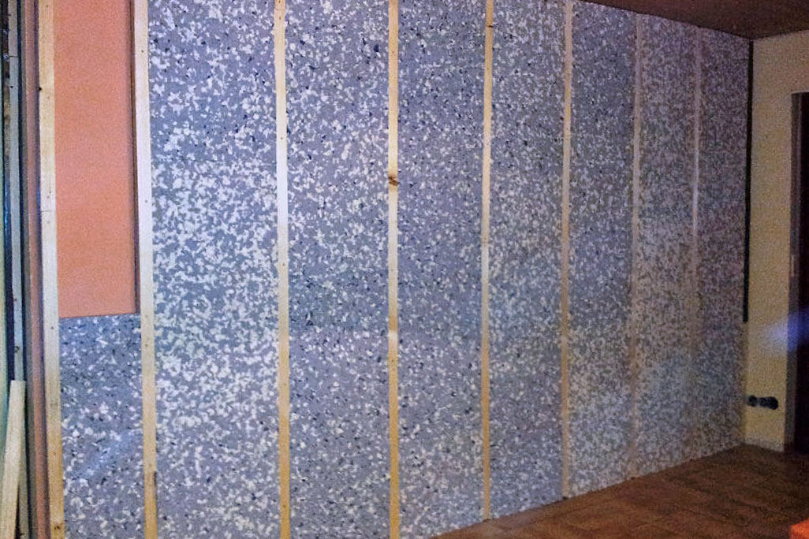

Fenómenos ondulatorios
Objetivo
Clasificar situaciones cotidianas según fenómenos ondulatorios
Fenómenos a estudiar
- Reflexión
- Refracción
- Absorción
- Transmisión
Otros fenómenos
- Difracción
- Interferencia
- Resonancia
- Efecto Doppler
Fenómenos ondulatorios
Reflexión
Reflexión
Reflexión: Es el cambio de dirección de la propagación de la onda al incidir en una separación de dos medios. Continúa la onda en el mismo medio.

Reflexión
Reflexión: Es el cambio de dirección de la propagación de la onda al incidir en una separación de dos medios. Continúa la onda en el mismo medio.

Ejemplos de Reflexión: Eco y Reverberación


Refracción
Refracción
Refracción: Es el cambio de dirección de la propagación de la onda al pasar de un medio a otro diferente.

Refracción
Refracción: Es el cambio de dirección de la propagación de la onda al pasar de un medio a otro diferente.

Simulación: Refracción
Absorción
Absorción
Absorción: Al atravesar un medio, le cede energía disminuyendo su amplitud.

Absorción
Absorción: Al atravesar un medio, le cede energía disminuyendo su amplitud.
Reflexión, Refracción, Transmisión y Absorción

El ángulo de la onda incidente y la reflejada son de igual medida. La onda refractada cambia de dirección al pasar de un medio a otro. La onda absorbida pierde energía. El resto sigue su camino.
Difracción
Difracción: Es la desviación de las ondas cuando encuentran un obstáculo o una abertura.

Objetivo
Analizar situaciones cotidianas aplicando el modelo de onda
Recordando algunos fenómenos
A) Reflexión
B) Refracción
C) Difracción
D) Absorción
A) Refracción
B) Interferencia
C) Reflexión
D) Resonancia
A) Reflexión
B) Refracción
C) Transmisión
D) Difracción
A) Absorción
B) Reflexión
C) Refracción
D) Interferencia
A) Refracción
B) Transmisión
C) Reflexión
D) Difracción
A) Transmisión
B) Absorción
C) Reflexión
D) Refracción
A) Reflexión
B) Refracción
C) Transmisión
D) Absorción
A) Solo transmisión
B) Refracción sin desviación
C) Reflexión total
D) Difracción
A) Absorción
B) Refracción
C) Reflexión
D) Transmisión
A) Reflexión
B) Difracción
C) Refracción
D) Absorción
A) Transmisión
B) Reflexión
C) Absorción
D) Interferencia
A) Reflexión
B) Refracción sin cambio angular
C) Difracción
D) Resonancia
Preguntas generales
Una persona

Problemas de fenómenos ondulatorios
- ¿Podemos ver a través de un sólido?¿Un líquido?¿Un gas?
- ¿Por qué podemos ver a través del vidrio pero no de la madera?
- ¿Qué relación existe entre la reflexión, refracción y transmisión y el fenómeno de ver a través de un sólido o líquido?

- ¿Por qué podemos escuchar a otras personas hablar detrás de un muro si no hay aire en medio?
- ¿Por qué colocamos espuma en las paredes para "insonorisar" habitaciones?
- ¿Qué relación existe entre la reflexión, refracción y transmisión y el fenómeno de escuchar detrás de un muro?
